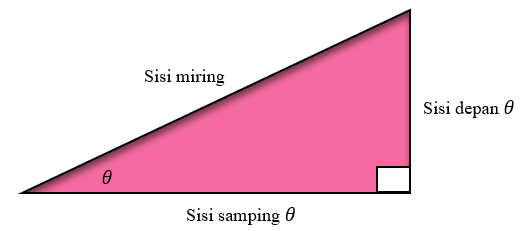

Materi Ajar

Fungsi Trigonometri Sudut Lancip
Perbandingan Trigonometri
Perbandingan trigonometri dengan mempertimbangkan segitiga siku-siku dan sudut lancip yang diukur dalam derajat. Huruf Yunani seperti α (alpha), β (beta), γ (gamma), θ (theta), dan φ (phi) sering digunkan untuk menunjukan sudut. Sebuah sudut dikatakan sudut lancip apabila besar sudutnya lebih besar dari 0° dan kurang dari 90°. Perhatikan segitiga siku-siku yang salah satu sudut lancipnya diberi label θ. Sisi yang berhadapan dengan sudut siku-siku disebut sisi miring. Sisi-sisi lain segitiga direferensikan berdasarkan posisinya relatif terhadap sudut lancip θ.

Panjang sisi-sisi segitiga digunakan untuk menentukan enam perbandingan trigonometri : Sine (sin) Cosecant (csc) Cosine (cos) Secant (sec) Tangent (tan) Cotangent (cot)
Sin θ adalah panjang dari sisi depan yang berlawanan θ dibagi dengan panjang dari sisi miring
\( \sin θ = \frac{Panjang\ sisi\ di\ depan\ θ}{Panjang\ sisi\ miring} \)
Perbandingannya tergantung pada besar sudut θ dan dengan demikian adalah fungsi dari θ. Notasi sin θ sebenarnya berarti sin (θ), dimana sin, atau sinus, adalah nama fungsinya.
Sin θ adalah panjang dari sisi samping yang berdekatan dengan θ dibagi dengan panjang dari sisi miring
\( \cos θ = \frac{Panjang\ sisi\ di\ samping\ θ}{Panjang\ sisi\ miring} \)
Enam perbandingan trigonometri, atau fungsi trigonometri, didefinisikan sebagai berikut
Nilai Fungsi Trigonometri Sudut Lancip θ
Jika suatu sudut θ dimana θ merupakan sudut lancip pada segitiga siku-siku, maka enam fungsi trigonometri dari θ dapat dinyatakan sebagai berikut:
\( \sin θ = \frac{Panjang\ sisi\ di\ depan\ θ}{Panjang\ sisi\ miring} \) |
\( \csc θ = \frac{Panjang\ sisi\ miring}{Panjang\ sisi\ di\ depan\ θ} \) |
\( \cos θ = \frac{Panjang\ sisi\ di\ samping\ θ}{Panjang\ sisi\ miring} \) |
\( \sec θ = \frac{Panjang\ sisi\ miring}{Panjang\ sisi\ di\ samping\ θ} \) |
\( \tan θ = \frac{Panjang\ sisi\ di\ depan\ θ}{Panjang\ sisi\ di\ samping\ θ} \) |
\( \cot θ = \frac{Panjang\ sisi\ di\ samping\ θ}{Panjang\ sisi\ di\ depan\ θ} \) |
CONTOH 1 Suatu Segitiga
Pada segitiga siku-siku di sebelah kiri, carilah enam nilai fungsi trigonometri dari (a) θ dan (b) α
Penyelesaian
Dengan menggunakan definisi sebelumnya, didapat
Dalam Contoh 1(a), kita perhatikan bahwa nilai \( \csc θ = \frac{13}{12} \), adalah kebalikan dari nilai \(\sin θ\), yaitu \( \frac{12}{13}\). Dengan cara yang sama, kita dapat melihat hubungan antara nilai \(sec\ θ\) dengan \(cos\ θ\) dan antara nilai \(cot\ θ\) dengan \(tan\ θ\). Untuk sudut mana pun, nilai cosecant, secant, dan cotangent masing-masing merupakan kebalikan dari nilai fungsi sinus, cosinus, dan tangent.
Fungsi Kebalikan Trigonometri
\( \csc θ = \frac{1}{sin θ} \) |
\( \sec θ = \frac{1}{cos θ} \) |
\( \cot θ = \frac{1}{tan θ} \) |
Jika kita mengetahui nilai fungsi sinus, cosinus, dan tangen suatu sudut, kita dapat menggunakan hubungan kebalikan di atas untuk mencari nilai fungsi cosecant, secant, dan cotangent dari suatu sudut.
CONTOH 2 Menentukan Nilai Rasio Fungsi Trigonometri
Diberikan nilai \(sin\ θ\ =\frac{4}{5}\), \(cos\ θ\ =\frac {3}{5}\), dan \(tan\ θ\ =\frac {4}{3}\), tentukan nilai dari \(csc\ θ\), \(sec\ θ\) , dan \(cot\ θ\).
Penyelesaian
Menggunakan fungsi kebalikan trigonometri yang kita miliki didapat
Dikatakan segitiga serupa jika sudut-sudut yang bersesuaian mempunyai ukuran yang sama. Pada segitiga sebangun, panjang sisi-sisi yang bersesuaian mempunyai perbandingan yang sama. Segitiga siku-siku di bawah ini sebangun. Perhatikan bahwa sudut-sudut yang bersesuaian sama besar dan panjang masing-masing sisi segitiga kedua adalah empat kali panjang sisi-sisi yang bersesuaian pada segitiga pertama
Mari kita amati nilai sin β, cos β, dan tan β di setiap segitiga. Bisakah kita mengharapkan nilai fungsi yang bersesuaian sama?
| Segitiga Pertama | Segitiga Kedua |
| \(sin\ β\ =\frac{3}{5}\) | \(sin\ β\ =\frac{12}{20}\ =\frac{3}{5}\) |
| \(cos\ β\ =\frac{4}{5}\) | \(cos\ β\ =\frac{16}{20}\ =\frac{4}{5}\) |
| \(tan\ β\ =\frac{3}{4}\) | \(tan\ β\ =\frac{12}{16}\ =\frac{3}{4}\) |
Untuk kedua segitiga, nilai sin β, cos β, dan tan β yang bersesuaian adalah sama. Panjang sisi-sisinya sebanding jadi rasioanya sama.
Nilai fungsi trigonometri dari θ bergantung pada besar sudut, bukan pada ukuran segitiga.
Enam Fungsi Berelasi
Lima nilai fungsi trigonometri sudut lancip lainnya dapat kita cari jika salah satu rasio nilai fungsi diketahui.
CONTOH 3 Menentukan Nilai Rasio Fungsi Trigonometri
Jika \(sin\ \beta =\frac{6}{7}\) dan β adalah sudut lancip, tentukan lima nilai fungsi trigonometri β lainya.
Penyelesaian
Kita mengetahui dari definisi fungsi sinus bahwa rasio

Dengan menggunakan informasi ini, mari kita perhatikan sebuah segitiga siku-siku yang sisi miringnya memiliki panjang 7 dan sisi yang berhadapan dengan β memiliki panjang 6. Unttuk mencari panjang sisi samping sudut β, kita inta kembali persamaan Phytagoras :
Sekarang kita menggunakan panjang ketiga sisinya untuk mencari lima rasio lainnya:
Nilai Fungsi 30°, 45°,dan 60°
Pada Contoh 1 dan 3, kita menemukan nilai fungsi trigonometri sudut lancip suatu segitiga siku-siku jika panjang ketiga sisinya diketahui. Dalam kebanyakan situasi, kita diminta untuk mencari nilai fungsi ketika ukuran sudut lancip diberikan. Untuk sudut khusus tertentu seperti 30°, 45°, dan 60° yang sering terlihat dalam aplikasi, kita dapat menggunakan geometri untuk menentukan nilai fungsinya.
Segitiga siku-siku dengan sudut 45° sebenarnya memiliki dua sudut 45°. Jadi segitiga tersebut sama kaki, dan panjang kakinya sama. Mari kita perhatikan sebuah segitiga yang panjang kakinya 1. Kemudian kita dapat mencari panjangnya sisi miring c, menggunakan persamaan Pythagoras sebagai berikut:
\(1^2 + 1^2\ =\ c^2\), atau \(c^2\ =\ 2\), atau \(c =\sqrt{2}\)
Segitiga seperti itu ditunjukkan di bawah ini. Dari diagram ini kita dapat dengan mudah menentukan nilai fungsi trigonometri 45°.
Cukup dengan mencari nilai fungsi sinus, cosinus, dan tangen saja, karena nilai-nilai lainnya merupakan kebalikannya.
Dimungkinkan juga untuk menentukan nilai fungsi 30° dan 60°. Segitiga siku-siku dengan sudut lancip 30° dan 60° merupakan setengah dari segitiga sama sisi, seperti terlihat pada gambar berikut. Jadi, jika kita memilih segitiga sama sisi yang panjang sisinya 2 dan mengambil setengahnya, kita memperoleh segitiga siku-siku yang memiliki sisi miring dengan panjang 2 dan panjang kaki 1. Kaki lainnya memiliki panjang a, yang dapat ditemukan sebagai berikut :
Sekarang kita dapat menentukan nilai fungsi 30° dan 60°
Karena kita akan sering menggunakan nilai fungsi 30°, 45°, 60°, dan 90°, baik segitiga yang menghasilkannya atau nilainya sendiri harus diingat.
| 0o | 30o | 45o | 60o | 90o | |
|---|---|---|---|---|---|
| sin | 0 | 1/2 | (1/2)√2 | (1/2)√3 | 1 |
| cos | 1 | (1/2)√3 | (1/2)√2 | 1/2 | 0 |
| tan | 0 | (1/3)√3 | 1 | √3 | - |
Sekarang mari kita gunakan apa yang telah kita pelajari tentang fungsi trigonometri sudut istimewa untuk menyelesaikan masalah.
CONTOH 4 Jarak ke Gua Api
Pohon-pohon besar dapat bertahan dari kebakaran hutan yang meninggalkan gua-gua besar di pepohonan (Sumber:Nasional geografis, Oktober 2009, hal. 32). Seorang pejalan kaki mengamati para ilmuwan mengukur gua api di pohon redwood di Prairie Creek Redwoods State Park. Dia memperkirakan bahwa dia berada 80 kaki dari pohon dan sudut antara tanah dan garis pandang para ilmuwan adalah 60°. Perkirakan seberapa tinggi gua api itu. Bulatkan jawaban ke kaki terdekat.
Penyelesaian
Kita mulai dengan diagram situasinya. Kita mengetahui besar sudut lancip dan panjang sisi yang berdekatan.

Karena kita ingin menentukan panjang sisi sepan yang berhadapan dengan sudut 60°, kita dapat menggunakan perbandingan tangen atau perbandingan cotangen. Di sini kita menggunakan rasio tangen :
Gua api tingginya sekitar 139 kaki.
Fungsi dan Komplemen
Kita ingat bahwa ada dua sudut yang saling berkomplemen bila jumlah besaranya sama dengan 90°. Masing-masing sudut merupakan pelengkap dari sudut yang lain. Dalam segitiga siku-siku, sudut-sudut lancip saling melengkapi, karena jumlah ketiga besar sudut adalah 180° dan sudut siku-siku berjumlah 90° dari total sudut tersebut. Jadi jika salah satu sudut lancip suatu segitiga siku-siku adalah θ, sudut lainya adalah 90° - θ.
Enam nilai fungsi trigonometri masing-masing sudut lancip pada segitiga siku-siku di bawah ini tercantum di sebelah kanan. Perhatikan bahwa 53° dan 37° merupakan sudut-sudut yang saling berkomplemen.
Untuk sudut-sudut ini, kita perhatikan bahwa
Sinus suatu sudut juga merupakan cosinus komplemen sudut. Demikian pula, tangent suatu sudut adalah cotangen komplemen sudut, dan secant suatu sudut adalah cosecant komplemen sudut. Pasangan fungsi ini disebut kofungsi.
Sudut-sudut Berkomplemen
(Identitas Kofungsi)
\( \sin θ = \cos (90^o - \theta) \) |
\( \csc θ = \sec (90^o - \theta) \) |
\( \cos θ = \sin (90^o - \theta) \) |
\( \sec θ = \csc (90^o - \theta) \) |
\( \tan θ = \cot (90^o - \theta) \) |
\( \cot θ = \tan (90^o - \theta) \) |
CONTOH 5 Menentukan Nilai Fungsi Trigonometri Sudut Komplemen
Diketahui sin 18o ≈ 0.3090, cos 18o ≈ 0.9511, dan tan 18° ≈ 0.3249, tentukan enam nilai fungsi trigonometri 72°
Kita tau bahwa 72o dan 18o saling komplemen, maka kita punya
Leave a comment